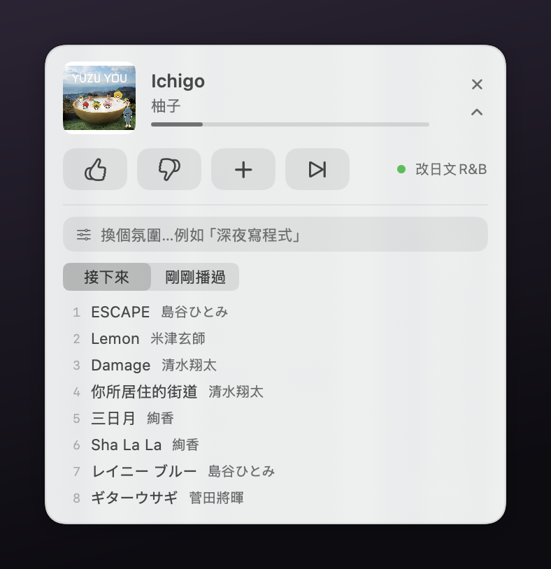

讀書筆記 ·
Chris 筆記｜看到別人用 Codex DJ Spotify，我讓 Claude 做了一個 Apple Music 版
原文：x.com · @nickbaumann_ ·
我的想法
看到那則推文的時候，我想到的是能不能用 Claude 在 macOS 上也做類似的開發，但是我是 Apple Music。所以就安排 Claude 來做這個專案了。
過程中最意外的是，本來沒有設想到可以用 AppleScript 來做，但沒想到做起來是蠻順利的，讓我見證了 Opus 5 的強大。
這個工具很好用，我應該會經常地使用，然後也把它上傳到 GitHub，並且公開分享。程式與安裝檔都放在 chrisincite/apple-music-dj，有興趣的人可以直接拿去用。

摘要 / Summary
這是一支常駐在螢幕角落的 macOS 小程式。你在它的輸入框打一句話描述現在想聽什麼氣氛，它就持續幫你的 Apple Music 排歌——維持一份十二首的佇列，播到剩不到八首自動補上，你按讚或按不喜歡它會跟著調整。
原推文裡，Nick 讓 Codex 用 computer use 操控 Spotify，靠心跳維持佇列，旁邊一支小 app 給回饋。Apple Music 版沒辦法照抄，因為 Spotify 有佇列 API 而 Apple Music 沒有。最後走的是 AppleScript：佇列的實體就是「音樂」App 裡一個叫「🎧 DJ」的播放清單，程式只往末端追加、不動已經播過的部分，所以接歌是系統原生的無縫播放，而不是逐首點播。換氛圍的時候也只清掉正在播那首之後的部分，當下這首會完整播完。
選曲完全靠規則，不呼叫任何模型、不連網、不需要 API key。每首歌的分數來自六層：氛圍詞典把「專注／深夜／早晨／放鬆／振奮／失戀／懷舊／古典／爵士／雷鬼／抒情」這類關鍵字對應到曲風加減分；拿你打的那句話去比對你自己既有的播放清單名稱；認得「不要有人聲」「放鬆但不要古典」這種否定說法；讀古典曲名裡的速度標記，快板與進行曲在要安靜的時候扣分、慢板與夜曲加分；按讚按不喜歡累積成藝人與曲風的權重；最後是重複與時節的過濾，近六小時播過的降權，聖誕與賀歲曲平常不會冒出來。
其中最有效的其實是第二層。「失戀時聽的周杰倫」這種自己取的播放清單名稱，本身就是最準的語意標籤，比任何曲風分類都貼近你當下想聽的東西。
第一版做成浮動小窗加 Python 常駐程式加 launchd 四塊分離的架構，後來為了能打包成 DMG 分享出去，把選曲與心跳整個改寫進 app 本體，變成單一一支不依賴 Python、不需要安裝腳本的程式。
重點 / Keypoint
安裝：到 repo 的 Releases 下載 AppleMusicDJ-*.dmg，把 app 拖進「應用程式」。第一次開啟會被 macOS 擋下來說「無法驗證開發者」，因為這支 app 沒有經過 Apple 公證——在「應用程式」裡對它按右鍵選「打開」，再按一次「打開」就好，只需要做這一次。啟動後它會問「Apple Music DJ 想要控制『音樂』」，必須允許，不然沒辦法排歌。
需求：macOS 13 以上的 Apple Silicon 機器、Apple Music 訂閱，而且「同步資料庫」要開啟（音樂 App → 設定 → 一般 → 同步資料庫）。它只從你已經加入資料庫的歌裡挑，不會去 Apple Music 的目錄挖新歌。
用法：點小窗右上角的 ⌄ 展開，在輸入框打一句氛圍就好，像是「深夜寫程式，安靜不要有人聲」「早晨咖啡」「夏天海邊」「放鬆但不要古典」「想聽聖誕鋼琴」。四顆按鈕分別是：👍 之後多排這種、👎 封鎖這首並少排這類（同時跳過）、＋ 存進「🎧 DJ 精選」播放清單、⏭ 跳過。展開區還有「接下來」與「剛剛播過」兩個分頁。
命令列：repo 裡的 cli/dj 是同一套狀態的遙控器，適合從終端機或腳本控制。把它連到 ~/.local/bin/dj 之後，可以用 dj on "深夜寫程式" 設氛圍並開啟小窗、dj vibe "早晨咖啡" 換氛圍、dj now 看現在播什麼與接下來十首、dj history 看剛剛播過的歌，以及 dj up／down／keep／skip 這四個跟按鈕等效的指令。
分享用短連結：https://os.housearch.net/n/9